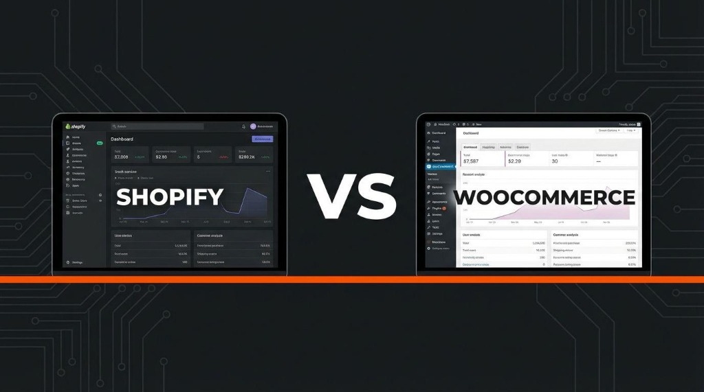

Choosing your e-commerce foundation is one of the most consequential strategic decisions you will make when launching or revamping an online retail business. Your platform doesn't just dictate how your product catalog looks; it governs your payment gateway transaction fees, checkout abandonment rates, software maintenance overhead, search engine rankings, and long-term operating margins.
In 2026, two dominant platforms power the majority of independent digital storefronts: Shopify and WooCommerce. While both enable businesses to showcase products, collect payments, and manage orders worldwide, they approach technical infrastructure from diametrically opposite philosophies.
So, Shopify vs WooCommerce: which is truly better for your business?
The honest answer is that neither platform is universally superior for every merchant. The best choice depends on your technical comfort, annual operating budget, desired degree of custom workflow control, and long-term scaling strategy. In this developer-crafted guide, SK Digital compares both platforms across critical commercial benchmarks to give you clarity and confidence.
- 1. What Is Shopify? (Pros & Practical Limitations)
- 2. What Is WooCommerce? (Pros & Practical Limitations)
- 3. Shopify vs WooCommerce: Deep Dive Comparison
- 4. Which Platform Is Better for Small Businesses?
- 5. What About International E-Commerce (US, UK, AU & Beyond)?
- 6. Can You Migrate Between Shopify and WooCommerce?
- 7. How to Choose: An 8-Point Merchant Decision Checklist
- 8. Need Help Choosing or Developing Your Store?
- Frequently Asked Questions
1. What Is Shopify?
Shopify is an all-in-one, fully managed software-as-a-service (SaaS) e-commerce engine. Founded to remove technical barriers for retailers, it bundles web hosting, SSL certificates, payment processing, content delivery networks (CDNs), and database infrastructure into a single turnkey monthly subscription.
With Shopify, you do not need to configure web servers, patch PHP libraries, or worry about server crashes during Black Friday flash sales. Shopify’s engineering team maintains the underlying operating system 24/7.
Key Advantages of Shopify
- Zero Infrastructure Overhead: Managed cloud hosting, automatic server scaling, and 99.99% uptime guarantees without DevOps knowledge.
- Turnkey Store Administration: Intuitive web and mobile admin panels to add inventory, print shipping labels, and fulfill orders with zero learning curve.
- Industry-Leading Checkout: "Shop Pay" accelerates one-click checkouts, yielding proven conversion lift over clunky multi-step forms.
- Strict Security & Compliance: Built-in PCI-DSS Level 1 compliance ensures you never handle raw credit card data or worry about payment processor audits.
- Extensive App Marketplace: Thousands of pre-built integrations for email marketing, social selling (TikTok, Instagram), and dropshipping.
Potential Limitations & Hidden Costs
While Shopify makes starting effortless, it enforces constraints that can become expensive as your store expands:
- Recurring App Subscription Creep: Want advanced product filtering, recurring subscriptions, or custom form builders? Most premium Shopify apps charge $10 to $60/month each, quickly compounding your monthly software overhead.
- Third-Party Payment Penalties: If you don't use Shopify Payments (or operate in a jurisdiction where it is unavailable), Shopify charges an additional 0.5% to 2.0% transaction fee on top of your gateway's standard fee.
- Proprietary Liquid Templating: Making deep customizations to theme logic or database models requires specialized Liquid developer expertise within Shopify's sandboxed environment.
2. What Is WooCommerce?
WooCommerce is an open-source, customizable e-commerce plugin built on top of WordPress—the world's most widely adopted content management system. Instead of renting a closed SaaS storefront, you deploy WooCommerce onto your own chosen web host (such as a Cloud VPS, DigitalOcean, or Hostinger).
Because WooCommerce is 100% open-source software, you hold absolute sovereign ownership of your database, source code, design assets, and customer lists without platform restrictions or vendor lock-in.
Key Advantages of WooCommerce
- Complete Data & Platform Ownership: You are never at risk of having your account arbitrarily suspended or de-platformed by a corporate terms-of-service change.
- Zero Platform Transaction Penalties: Connect Stripe, Razorpay, PayPal, or crypto gateways without paying surcharges to WooCommerce.
- Boundless Customization: Full access to underlying PHP code, template hooks, REST APIs, and database tables to engineer bespoke checkout flows and B2B pricing tiers.
- Unmatched Content & SEO Synergy: Tap directly into WordPress's world-class publishing engine to execute content marketing, deep programmatic SEO, and rich editorial guides that outrank generic product catalogs.
- Thousands of One-Time or Low-Cost Plugins: Many WordPress plugins operate on modest annual or lifetime licenses rather than steep monthly recurring fees.
Potential Limitations
Freedom brings responsibility. Running an enterprise WooCommerce store requires disciplined maintenance:
- Hosting & Performance Tuning: You are responsible for provisioning adequate cloud server resources, object caching (Redis), and CDN optimization to maintain sub-second loading speeds.
- Active Maintenance & Updates: WordPress core, WooCommerce, and third-party extensions must be routinely tested in a staging sandbox before updating on live production servers.
- Security Oversight: You must configure automated daily cloud backups, web application firewalls (Cloudflare), and brute-force protection to keep your server hardened.
3. Shopify vs WooCommerce: Deep Dive Key Differences
Let's compare how both platforms stack up across the six most critical commercial considerations for e-commerce operators in 2026.
| Feature Dimension | Shopify (Hosted SaaS) | WooCommerce (Open-Source WordPress) |
|---|---|---|
| Platform Architecture | Closed proprietary cloud SaaS | Open-source self-hosted plugin on WordPress |
| Initial Setup Ease | Extremely fast (Launch within days) | Moderate (Requires hosting & theme configuration) |
| Core Licensing Cost | Starts at $39/mo (Basic) up to $399/mo | 100% Free core plugin (Pay for hosting & domain) |
| Transaction Surcharges | 0.5%–2.0% unless using Shopify Payments | 0% platform fee (Only gateway standard rates apply) |
| Design & Code Control | Sandboxed (Liquid / Storefront API) | Total access to PHP, CSS, JS & Database schemas |
| Search Engine Optimization | Solid basics; locked URL prefixes (e.g., /products/) |
Superior native control; custom permalinks & schema |
| Maintenance Responsibilities | Managed automatically by Shopify | Managed by merchant or dedicated developer |
| Recommended Developer Partner | Shopify Partner / Liquid Developer | Senior Full-Stack PHP & WordPress Engineer |
Ease of Use & Store Administration
Shopify wins hands down for non-technical store owners who want to log in, add products, set inventory counts, and start selling within a weekend. Its dashboard is uncluttered and purposefully restricted to prevent merchants from accidentally breaking page layouts.
WooCommerce provides an equally clean product management interface inside WordPress once set up, but the broader dashboard contains many moving parts—including plugins, updates, site health reports, and caching settings. For merchants comfortable with WordPress, it feels entirely natural; for complete novices, it has a slightly steeper learning curve.
Total Cost of Ownership (TCO) Breakdown
A common misconception is that WooCommerce is completely free while Shopify is universally expensive. In reality, both models carry ongoing expenses, but the distribution of costs differs dramatically:
Shopify Store: Core Plan ($39/mo = $468/yr) + 3 Essential Apps ($45/mo = $540/yr) + Custom Theme ($350) + Domain ($15) = ~$1,373/year before payment processing fees.
WooCommerce Store: High-Performance Cloud VPS ($15/mo = $180/yr) + Domain ($15) + Premium Theme ($60) + Security & Backups ($70/yr) = ~$325/year before developer maintenance.
Neither platform is inherently cheaper across the board. If you do not have in-house technical skills and must hire a developer every time a WooCommerce plugin conflicts, Shopify may prove more economical. However, for scaling stores grossing $20,000+ monthly, WooCommerce saves thousands of dollars annually by eliminating platform percentage cuts and recurring app fees.
SEO and Content Marketing Synergy
Organic search remains the most sustainable channel for customer acquisition without bleeding cash on escalating Meta and Google Ads. Here, WooCommerce holds a marked structural edge:
- Complete URL Permalink Customization: In WooCommerce, you can structure URLs however you wish (e.g.,
domain.com/shoes/running/). Shopify forces rigid directories likedomain.com/products/running-shoesanddomain.com/collections/shoes. - Superior Long-Form Publishing: WordPress is the world's premier blogging system. Publishing deep buying guides, customer reviews, video embeds, and category landing pages is seamless.
- Rich Schema Markup: Granular control over JSON-LD Product schemas, AggregateRating, and InStock indicators using plugins like Rank Math or Yoast.
Shopify certainly supports capable on-page SEO—fast CDNs, auto-generated sitemaps, and customizable title tags—but its rigid taxonomy restricts advanced technical SEO tactics.
4. Which Platform Is Better for Small Businesses?
To make the right choice, align your platform decision with your operational profile:
Choose Shopify If:
• You are a solo entrepreneur or small team without technical/developer resources.
• You need to launch quickly with minimal setup friction.
• Your product catalog is standard physical retail or dropshipping without complex custom bundling.
• You prioritize a guaranteed 99.99% hosted checkout uptime over bespoke code ownership.
• You are comfortable budgeting $50–$150/month for software subscriptions.
Choose WooCommerce If:
• You already run an established WordPress website or active blog with steady organic traffic.
• You require custom checkout funnels, specialized wholesale (B2B) pricing tiers, or unique booking flows.
• You want 100% intellectual property ownership of your data without vendor lock-in.
• You want to avoid paying percentage transaction penalties to a platform provider.
• You have access to a dependable full-stack developer (like SK Digital) to handle maintenance and speed optimization.
5. What About International E-Commerce Businesses?
If you are selling to high-value markets in the United States, United Kingdom, Canada, Australia, and the European Union, cross-border e-commerce requirements become paramount:
- Multi-Currency & Localized Checkout: Customers convert up to 3x higher when browsing and paying in their domestic currency (USD, GBP, AUD, EUR). Shopify offers "Shopify Markets", while WooCommerce utilizes plugins like Currency Switcher and multi-lingual extensions (WPML/Polylang).
- Preferred Regional Payment Gateways: While US buyers prefer Credit Cards and Apple Pay, UK and European buyers often demand Klarna, Clearpay, or iDEAL. Both platforms support global gateways, but WooCommerce allows you to enable any localized payment processor without paying gateway penalty fees.
- Automated Duties, VAT & Shipping Calculations: Complying with UK/EU VAT rules or multi-state US sales tax (Nexus) requires integrations with automated tax engines like TaxJar or Avalara, easily hooked into both platforms.
- Strict Data Privacy Compliance: Serving European or California shoppers requires adherence to GDPR and CCPA. With WooCommerce, you retain absolute sovereign control over where your customer data is physically hosted.
6. Can You Migrate Between Shopify and WooCommerce?
Yes. As businesses evolve, migrating platforms is common. Store owners often start on Shopify for simplicity and migrate to WooCommerce when app fees escalate, or conversely migrate from poorly maintained WooCommerce sites to Shopify for a hands-off experience.
What Can Be Safely Migrated
Using specialized database migration scripts and API endpoints, an experienced developer can safely transfer:
- Complete product catalogs, descriptions, high-resolution media galleries, and SKUs.
- Complex product variants (sizes, colors, materials, custom attributes).
- Historical customer databases, billing addresses, and order histories.
- Category taxonomies and blog content.
The single greatest risk during any e-commerce migration is losing hard-earned organic Google rankings. Because Shopify and WooCommerce use completely different URL naming conventions, every single legacy product, category, and article URL must be mapped to its new location with permanent 301 redirects before launch.
7. How to Choose: An 8-Point Merchant Decision Checklist
Before committing to a contract or writing a single line of code, review these 8 decisive questions with your stakeholders:
Simple retail stores with under 100 SKUs thrive on Shopify; complex stores with thousands of custom variants or dynamic configurators often perform better on a dedicated WooCommerce build.
Check if your target payment processors trigger secondary transaction surcharges on Shopify.
If over 50% of your projected customer acquisition relies on informational content and buying guides, WordPress/WooCommerce is the undisputed leader.
If you don't have an internal technical resource or an ongoing retainer with an engineer, Shopify handles hosting security automatically.
Factor in not just the base plan, but premium apps, themes, domain registration, and hosting costs over a full operating year.
Verify whether native API connectors exist or if custom middleware development is necessary.
Shopify restricts B2B features to its premium "Shopify Plus" tier ($2,000+/mo), whereas WooCommerce enables robust B2B role-based pricing for a fraction of the cost.
Choose an architecture that gives your business room to scale without forcing an emergency re-platforming down the road.
8. Need Help Choosing or Developing Your Online Store?
Selecting an e-commerce platform is only the foundational first step. The true determinant of commercial success is building a storefront engineered for high conversion rates, lightning-fast mobile loading times, and zero checkout friction.
At SK Digital, senior full-stack engineer Shashi Kumar brings over 8 years of production development experience delivering tailored e-commerce platforms for clients worldwide:
- Custom Shopify Store Engineering: Custom Liquid theme development, conversion-optimized mobile checkouts, custom app integrations, and zero theme bloat.
- High-Performance WooCommerce Builds: Sub-second server response times, Redis object caching, custom database optimization, and rock-solid security.
- Flawless Store Migrations: 100% data fidelity transfer of products, customers, and historical orders with zero organic SEO traffic loss.
- Transparent, Fixed-Price Estimates: Clear milestones, direct developer communication on WhatsApp, and 30 days of complimentary post-launch support.
Want an immediate cost breakdown for your e-commerce project? Use our interactive scope estimator on the homepage to configure products, payments, and custom design features.
Final Verdict: Shopify or WooCommerce?
The verdict comes down to a fundamental trade-off: convenience vs. control.
If you want a dependable, managed environment where infrastructure headaches are handled for you and you don't mind paying recurring platform fees, Shopify is an outstanding investment.
If you demand total sovereignty over your brand data, require deep WordPress content synergy, want to eliminate arbitrary transaction surcharges, and desire complete architectural freedom, WooCommerce is the undisputed champion.
Take the time to evaluate your unique business workflows, calculate your true total cost of ownership, and partner with an experienced developer who can turn your vision into a profitable digital asset.